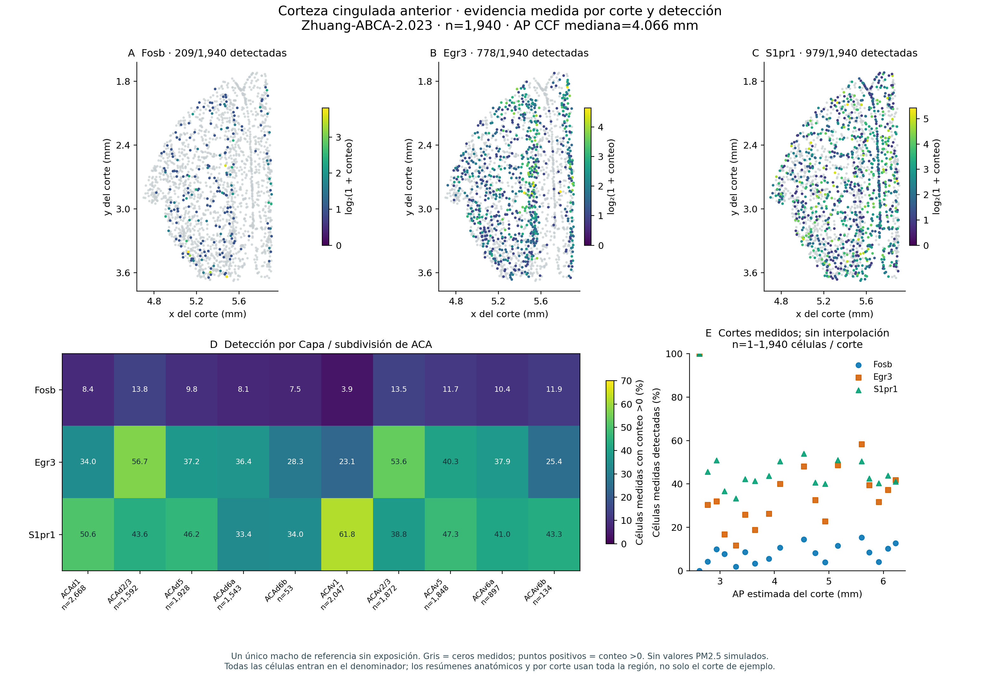
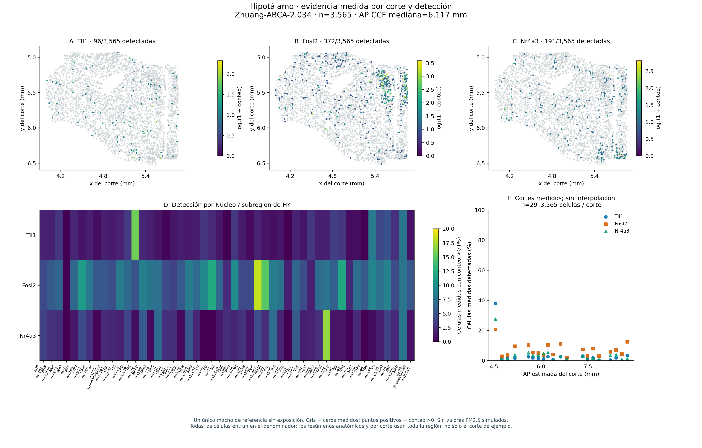

Exploración anatómica de corteza cingulada anterior e hipotálamo
Fecha del análisis
20 octubre 2026
Introducción
La nube tridimensional contiene coordenadas reales registradas del atlas. Esta extensión permite reconocer su organización anatómica mediante cortes físicos originales, capas corticales o núcleos hipotalámicos y mapas de la proporción de células medidas en las que se detecta un gen. No recoloca células ni genera observaciones adicionales. La referencia es Zhuang-ABCA-2, un macho adulto sin exposición experimental, separado de los estudios de contaminación. (Zhang et al. 2023)
Células / cortes de ACA14,582 / 18ACA dorsal + ventral; todas las células registradas
Células / cortes de HY37,811 / 20Todas las células hipotalámicas registradas
Subdivisiones anatómicas10 ACA / 49 HYCapas/subdivisiones y núcleos; sin reubicación
Animales de referencia1Los cortes físicos no son animales independientes
Explorar los cortes medidos
Seleccione región cerebral, corte físico y gen. Los mapas dentro de cada corte usan coordenadas experimentales depositadas; las etiquetas anatómicas proceden del registro CCF. Los dos sistemas de coordenadas no son intercambiables. En ACA, las subestructuras distinguen corteza dorsal/ventral y capas 1, 2/3, 5, 6a y 6b. Las subdivisiones del hipotálamo identifican núcleos, no capas corticales.
Los identificadores celulares enlazan los metadatos de cortes originales con la referencia regional existente sin cambiar su orden ni los conteos. Se conservan todas las células regionales registradas. Los diez candidatos medidos por región reproducen las listas anteriores de prioridad génica; esta extensión no vuelve a seleccionar hallazgos de exposición usando los mapas espaciales.
Detección significa un conteo de imagen original mayor que cero. Para cada grupo anatómico o bin espacial ocupado, el numerador es el número de células con conteo positivo y el denominador son todas las células medidas seleccionadas, incluidos los ceros. Los filtros cambian tanto el numerador como el denominador. Los bins vacíos carecen de denominador y permanecen sin datos; no se colorean como detección cero. Es una proporción de detección entre células muestreadas: no son células por volumen de tejido, ausencia biológica ni proporción de células que responden a PM2.5.
Cada gen puede visualizarse como expresión medida, detección binaria, clase celular o anatomía. Los ceros permanecen visibles en un color neutro. El tamaño del bin y el número de células que lo sustentan son explícitos. Los valores celulares y tablas siguen disponibles para descarga. Un mapa más suave no demuestra mayor resolución de adquisición: este donante se muestreó en cortes coronales con separación nominal de 200 µm. (Zhang et al. 2023)
Resultados y alternativas estáticas
Las figuras siguientes utilizan células reales y conteos medidos. Los resúmenes por capa/núcleo conservan sus denominadores y la separación de los cortes físicos permanece visible. Describen un donante de referencia, sin aportar réplicas de animales expuestos.
ACA aporta 18 cortes físicos y HY aporta 20; algunos contienen células de ambas regiones y no son animales adicionales. Un corte del borde de ACA contiene solo una célula registrada. Esos denominadores pequeños permanecen visibles: un 0% o 100% en un grupo pequeño no debe interpretarse como una proporción regional precisa.
Interpretación y extensión bayesiana
Las restricciones anatómicas permiten ver la organización existente sin mover células. La pestaña bayesiana estima log-expresión basal esperada en las posiciones celulares existentes y muestra la incertidumbre por separado. No transforma una no detección en una molécula observada. Los resultados de predicción en cortes reservados, los supuestos y las limitaciones se presentan en el capítulo bayesiano.
La comparación experimental de PM2.5 conserva el análisis regional de tejido completo y el escenario uniforme original en los visores 3D separados. Estos mapas de cortes no identifican células expuestas ni respuestas específicas por tipo celular.
Zhang, Meng, Xingjie Pan, Won Jung, et al. 2023. «Molecularly defined and spatially resolved cell atlas of the whole mouse brain». Nature 624: 343-54. https://doi.org/10.1038/s41586-023-06808-9.
Ejecutar el código
---title: "Cortes medidos, capas corticales y detección"subtitle: "Exploración anatómica de corteza cingulada anterior e hipotálamo"page-layout: fulltoc: false---```{python}import jsonimport pandas as pdfrom IPython.display import Markdown, displayfrom _report_utils import ROOT, summary, metric_cards, figure, read_table, show_tables = summary("spatial_sections")```## IntroducciónLa nube tridimensional contiene coordenadas reales registradas del atlas. Esta extensión permite reconocer su organización anatómica mediante cortes físicos originales, capas corticales o núcleos hipotalámicos y mapas de la proporción de células medidas en las que se detecta un gen. No recoloca células ni genera observaciones adicionales. La referencia es **Zhuang-ABCA-2**, un macho adulto sin exposición experimental, separado de los estudios de contaminación. [@Zhang2023_38092912][Referencia bayesiana: métodos, validación e incertidumbre](spatial_bayes.qmd){.btn .btn-outline-primary}[Referencia/escenario 3D original de corteza](cortex_viewer.qmd){.btn .btn-outline-secondary}[Referencia/escenario 3D original de hipotálamo](viewer.qmd){.btn .btn-outline-secondary}```{python}metric_cards([ ("Células / cortes de ACA", f"{s['ACA']['cells']:,} / {s['ACA']['sections']}", "ACA dorsal + ventral; todas las células registradas"), ("Células / cortes de HY", f"{s['HY']['cells']:,} / {s['HY']['sections']}", "Todas las células hipotalámicas registradas"), ("Subdivisiones anatómicas", f"{s['ACA']['anatomical_groups']} ACA / {s['HY']['anatomical_groups']} HY", "Capas/subdivisiones y núcleos; sin reubicación"), ("Animales de referencia", "1", "Los cortes físicos no son animales independientes")])```## Explorar los cortes medidosSeleccione región cerebral, corte físico y gen. Los mapas dentro de cada corte usan coordenadas experimentales depositadas; las etiquetas anatómicas proceden del registro CCF. Los dos sistemas de coordenadas no son intercambiables. En ACA, las subestructuras distinguen corteza dorsal/ventral y capas 1, 2/3, 5, 6a y 6b. Las subdivisiones del hipotálamo identifican núcleos, no capas corticales.<iframe id="sections-frame" class="viewer-frame" src="../assets/spatial-explorer/index-es.html?region=ACA" title="Explorador de cortes medidos, anatomía y detección" loading="lazy"></iframe><script>window.addEventListener("message",function(event) {const frame =document.getElementById("sections-frame");if (frame &&event.source=== frame.contentWindow&&event.origin===window.location.origin&&event.data&& ["omics-spatial-height","omics-atlas-height"].includes(event.data.type)) {const height =Number(event.data.height);if (Number.isFinite(height)) frame.style.height=Math.min(14000,Math.max(1700, height +30)) +"px"; }});</script>[Abrir el explorador independiente](../assets/spatial-explorer/index-es.html?region=ACA){.btn .btn-primary target="_blank"}## MetodologíaLos identificadores celulares enlazan los metadatos de cortes originales con la referencia regional existente sin cambiar su orden ni los conteos. Se conservan todas las células regionales registradas. Los diez candidatos medidos por región reproducen las listas anteriores de prioridad génica; esta extensión no vuelve a seleccionar hallazgos de exposición usando los mapas espaciales.**Detección significa un conteo de imagen original mayor que cero.** Para cada grupo anatómico o bin espacial ocupado, el numerador es el número de células con conteo positivo y el denominador son todas las células medidas seleccionadas, incluidos los ceros. Los filtros cambian tanto el numerador como el denominador. Los bins vacíos carecen de denominador y permanecen sin datos; no se colorean como detección cero. Es una proporción de detección entre células muestreadas: no son células por volumen de tejido, ausencia biológica ni proporción de células que responden a PM2.5.Cada gen puede visualizarse como expresión medida, detección binaria, clase celular o anatomía. Los ceros permanecen visibles en un color neutro. El tamaño del bin y el número de células que lo sustentan son explícitos. Los valores celulares y tablas siguen disponibles para descarga. Un mapa más suave no demuestra mayor resolución de adquisición: este donante se muestreó en cortes coronales con separación nominal de 200 µm. [@Zhang2023_38092912]## Resultados y alternativas estáticasLas figuras siguientes utilizan células reales y conteos medidos. Los resúmenes por capa/núcleo conservan sus denominadores y la separación de los cortes físicos permanece visible. Describen un donante de referencia, sin aportar réplicas de animales expuestos.```{python}manifest = json.loads((ROOT /"results/spatial_sections/figure_manifest.json").read_text())for stem, item in manifest.items(): language = item.get("language", "es"if stem.endswith("_es") else"en")if language =="es": figure("spatial_sections", stem, item.get("caption_es", item.get("caption", "")))``````{python}rows = []for region in ("ACA", "HY"): info = s[region]for gene in info["genes"]: positive = info["positive_cells"][gene] rows.append([region, gene, positive, info["cells"], 100* positive / info["cells"]])show_table(pd.DataFrame(rows, columns=["Región", "Gen", "Células positivas", "Todas las células medidas", "Detección (%)"]), n=20)```ACA aporta 18 cortes físicos y HY aporta 20; algunos contienen células de ambas regiones y no son animales adicionales. Un corte del borde de ACA contiene solo una célula registrada. Esos denominadores pequeños permanecen visibles: un 0% o 100% en un grupo pequeño no debe interpretarse como una proporción regional precisa.## Interpretación y extensión bayesianaLas restricciones anatómicas permiten ver la organización existente sin mover células. La pestaña bayesiana estima **log-expresión basal esperada** en las posiciones celulares existentes y muestra la incertidumbre por separado. No transforma una no detección en una molécula observada. Los resultados de predicción en cortes reservados, los supuestos y las limitaciones se presentan en el [capítulo bayesiano](spatial_bayes.qmd).La comparación experimental de PM2.5 conserva el análisis regional de tejido completo y el escenario uniforme original en los visores 3D separados. Estos mapas de cortes no identifican células expuestas ni respuestas específicas por tipo celular.## Datos fuente y reproducibilidad[Resumen de cortes](../downloads/spatial_sections/summary.json) · [Comprobaciones de datos y cálculos](../downloads/spatial_sections/validation.json) · [Preparación reproducible](../downloads/code/build_spatial_sections.py) · [Capítulo completo de reproducibilidad](reproducibility.qmd).[Células y cortes de ACA](../downloads/spatial_sections/ACA/cells_with_sections.tsv.gz) · [Metadatos de cortes de ACA](../downloads/spatial_sections/ACA/sections.tsv) · [Detección por capa de ACA](../downloads/spatial_sections/ACA/detection_by_anatomy.tsv.gz) · [Detección por bin ocupado de ACA](../downloads/spatial_sections/ACA/detection_by_bins.tsv.gz).[Células y cortes de HY](../downloads/spatial_sections/HY/cells_with_sections.tsv.gz) · [Metadatos de cortes de HY](../downloads/spatial_sections/HY/sections.tsv) · [Detección por núcleo de HY](../downloads/spatial_sections/HY/detection_by_anatomy.tsv.gz) · [Detección por bin ocupado de HY](../downloads/spatial_sections/HY/detection_by_bins.tsv.gz).
![0 / todas las células medidas por anatomía depositada y corte, usando toda la región. Son proporciones descriptivas de un donante sin exposición; sin pruebas celulares, suavizado, intervalos ni mediciones expuestas. ACA usa capas/subdivisiones; HY núcleos/subregiones. Se muestra el n desigual; puede ser muy pequeño por corte y se descargan todos los denominadores. El mapa anatómico usa una escala 0–70% sin recortar; las escalas regionales difieren. No se conectan cortes a través de huecos." class="figure-img">](../assets/figures/spatial_sections/ACA_sections_evidence_es.svg){kind=link}
![0 / todas las células medidas por anatomía depositada y corte, usando toda la región. Son proporciones descriptivas de un donante sin exposición; sin pruebas celulares, suavizado, intervalos ni mediciones expuestas. ACA usa capas/subdivisiones; HY núcleos/subregiones. Se muestra el n desigual; puede ser muy pequeño por corte y se descargan todos los denominadores. El mapa anatómico usa una escala 0–20% sin recortar; las escalas regionales difieren. No se conectan cortes a través de huecos." class="figure-img">](../assets/figures/spatial_sections/HY_sections_evidence_es.svg){kind=link}